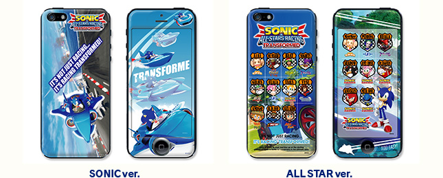
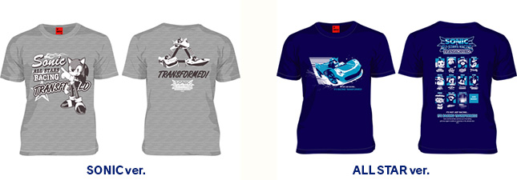

ソニック関連のグッズ情報の紹介！
2014.08.07
MARS16×ソニック＆オールスターレーシング TRANSFORMEDに、iPhone5/5s専用i-chawrap(アイキャラップ)が登場！
ソニックとゲームの醍醐味である陸・海・空で変形するマシンが描かれている「ソニックver.」と、たくさんの登場キャラクターが描かれた「オールスターver.」の2種。
i-chawrap(アイキャラップ)はiPhone5/5s用の全く新しいカバータイププロテクター。シールとは違うクッション性の高い特殊樹脂で作られており、表・裏に貼ることができるためiPhoneを傷から守るだけでなくファッション性の高いアイテムとしてグレードアップすることができます。

| 商品名 | ソニック＆オールスターレーシング TRANSFORMED iPhone5/5s専用i-chawrap(アイキャラップ) |
|---|---|
| 種類 | 全2種 (SONIC ver.／ALL STAR ver.) |
| 価格 | 各3,500円 (税別) |
| 発売日 | 2014年08月30日 |
| 販売元 | 株式会社マーズ・シックスティーン |
| 購入サイト | SONIC ver.：http://www.mars16.com/item/8699/ ALL STAR ver.：http://www.mars16.com/item/8695/ |
世紀のオールスターイベントに、あのMARS16がTシャツで参加！ SEGA×MARS16通算17弾Tシャツとして、イベント感を楽しめるTシャツを2種類リリース！
[ALL STAR ver.]は、フロントには『ソニック・ザ・ヘッジホッグ』のソニックを、バックには『スーパーモンキーボール』のアイアイ、『Shinobi 忍』のジョー・ムサシ、『ジェットセットラジオ』のビート、『NiGHTS』のナイツ、『ゴールデンアックス』のギリウス、『スペースチャンネル5』のうらら、『ソニック・ザ・ヘッジホッグ』のテイルス、『エターナルアルカディア』のヴァイス、『サンバDEアミーゴ』のアミーゴ、『クレイジータクシー』のB.D.JOE、そして･･･（近日公開）がデザインされています。
[SONIC ver.]には、フロントに『ソニック・ザ・ヘッジホッグ』のソニックを、バックにはこのゲームの醍醐味である陸・海・空で変形するマシンが描かれています。

| 商品名 | 169th Single ソニック＆オールスターレーシング TRANSFORMED |
|---|---|
| 種類 | 全2種 (SONIC ver.／ALL STAR ver.) |
| 価格 | 各3,800円 (税別) |
| 発売日 | 2014年05月15日 |
| 販売元 | 株式会社マーズ・シックスティーン |
| 購入サイト | SONIC ver.：http://www.mars16.com/item/8450/ ALL STAR ver.：http://www.mars16.com/item/8445/ |